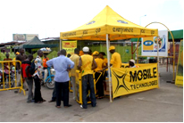
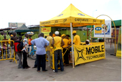

1- Constituer un dossier avec les pièces suivantes :
- Copie de la carte d'identité
- Reçu d'achat
- Autres pièces de la Sim perdu ou détériorée : plaquette, guide d'utilisateur
Puis rendez vous dans l'un de nos Centres Services Clientèle MTN ou chez nos Distributeurs muni du dossier pour effectuer un changement sim.
2- Désormais, vous avez une autre possibilité de reprendre vous-même votre carte SIM perdue !!!
Pour ce faire, il faut d'abord souscrire au service et disposer d'une SIM vierge pour pouvoir effectuer l'opération. Les SIM vierges sont en vente au prix de
500FCFA seulement et sont disponibles en agence et chez nos distributeurs agréés.
- Comment souscrire au service ?
A partir de votre SIM actuelle, tapez *999# puis OK.
Vous recevrez alors le message suivant:
« Votre code d'opération de changement SIM est xxxx; veuillez le garder secrètement ».
Chaque abonné a droit à un code unique de 4 chiffres qui servira à l'identifier lorsqu'il va initier un changement SIM.
Pour changer ce code, à tout moment, il faut composer : *999*ancien Code SIM
Change* Nouveau code SIM change#
- Comment changer la carte SIM vous-même ?
Pour effectuer un changement SIM suite à une perte ou détérioration de cette dernière, il faut d'abord avoir souscrit au service.
Utilisez donc un numéro MTN actif (Ce numéro ne peut être celui que vous avez perdu) et composez:*974*votre code SIM change*votre numéro perdu*le numéro SIM de la carte SIM vierge#.
Cette commande vous conduira aux étapes suivantes:
- Veuillez entrer votre Nom.
- Veuillez entrer votre Prénom.
- Veuillez entrer un autre numéro de téléphone.
- Combien cela coute-t-il?
La Carte SIM vierge MTN (carte SIM compatible pour les opérations de changement SIM) est vendue au prix de 1 000 FCFA. L' opération de changement SIM, quant à elle, est gratuite.
Important:
Lorsqu'un abonné a déjà effectué un changement SIM en utilisant ce processus, s 'il perd sa SIM à nouveau, il devra s'assurer que le Nom, Prénom et autre numéro sont identiques à ceux entrés lors du précédent changement SIM. En cas d'oubli de son code secret, l'abonné devra se rapprocher d'une agence MTN pour recevoir
- Cotonou
| NOMS STRUCTURES |
LOCALITES |
| Havila |
Calavi |
| Nous deux |
Calavi |
| Tchenawa |
Pahou |
| Don de Dieu Avivi |
Cococodji |
| Havila |
Calavi |
- Mono / Couffo
| NOMS STRUCTURES |
LOCALITES |
| Mémoire Télécom |
Azovè |
| Le Changement |
Bopa |
| Jesus Bénit |
Possotomé |
| FIG Bénin |
Lokossa |
| Prodicom |
Comè |
| La Référence |
Hillacondji |
| ALBARKA |
Sèhouè |
| Béton Moderne |
Ouidah |
- Ouémé / Plateau
| NOMS STRUCTURES |
LOCALITES |
| Iltel |
Porto Novo |
| Sabach |
Porto Novo |
| Yadzane |
Porto Novo |
| Avé Maria |
Porto Novo |
| Centrale D. com |
Porto Novo |
| Portotel |
Adjarra |
| FTB |
Dangbo |
| FTB |
Bonou |
| Portotel |
Ikpinlè |
| Jacques & fils |
Banigbé |
| Igbalani |
Ifangni |
| Anifowoche |
Porto Novo |
| Ayolo |
Illara |
| Anifowoche |
Porto Novo |
- Zou / Collines
| NOMS STRUCTURES |
LOCALITES |
| COSMOS |
Kilibo |
| AHANHANZO TELECOM |
Glazoué |
| PAUNOU TELECOM |
Panhouignan |
| VIGA VODAFONE |
Bohicon |
- Atacora / Donga
| NOMS STRUCTURES |
LOCALITES |
| Sans nom |
Boukoumbé |
| TRAVCO |
Djougou |
| Sans nom |
Cobly |
| Manga & Fils |
Matéri |
| Pharmacie AZADO |
Kérou |
- Borgou / Alibori
| NOMS STRUCTURES |
LOCALITES |
| **** |
Kalalé |
| **** |
Pèrèrè |
| Miche phone |
Bembèrèkè |
| Miche phone |
Sinendé |
- Parakou
| NOMS STRUCTURES |
LOCALITES |
| FAGHAL ET FILS |
Parakou |
| TRAVCO |
Parakou |
| DARIBELLE |
Parakou |
| AKOFFON ET FILS |
Parakou |
| HOUNKPATIN |
Parakou |
| MEGA MOBILE |
Parakou |
| LINARCEL |
Parakou |
| Famos |
Natitingou |
| PHARMACIE NASSIRA |
KANDI |
| FTB KETOU |
KETOU |
| AMS-POBE |
POBE |
| FTB SEME |
SEME |
| AINA TELECOM |
SEME |
| SATCHCOM |
AVRANKOU |
| AL MAROOF |
IGOLO |
| AKOJACOM |
MISSERETE |
| FTB ADJOHOUN |
ADJOHOUN |
| FTB SAKETE |
SAKETE |
| FTB IGOLO |
IGOLO |
| FTB POBE |
POBE |
| JB COM |
KETOU |
| KORA ET FILS |
GOGOUNOU |
| HONORE |
BANIKORA |
| CHEZ PAPA LOME |
KOUANDE |
| STARGATE INFORMATIQUE |
PEHUNCO |
| CHEZ ATHANASE |
MODIFICATION |
| SUNNY BEN CHRIST |
N'DALI |
| FAGHAL ET FILS |
DJOUGOU |
| QUIDATA |
TANGUIETA |
| KADOUKPE 3 |
MALANVILLE |
| ADJIGOUN ET FILS |
NIKKI |
| CHEZ ORAF |
NIKKI |
| SOKOM ARTS |
AZOVE |
| ZEPHIR |
AZOVE |
| DJK MULTI SERVICES |
ABOMEY |
| ALBARKA ABOMEY |
ABOMEY |
| COLOMBE STORE SAVALOU |
SAVALOU |
| ETS BIDOSSESSI |
SAVALOU |
| KABED |
DASSA |
| COLOMBE STORE DASSA |
DASSA |
| KONATE ET FILS |
SAVE |
| LA VIERGE |
SAVE |
| FASIATH ET FILS |
KANDI |
| ETS SAINT JEAN DEO GRATIA |
SEGBANA |
| DON DE DIEU AVIVI |
CALAVI |
| GUERIN |
COVE |
| ALBARKA COVE |
COVE |
| AFAZ ET FILS |
BASSILA |
| ESPOIR |
BANTE |
| DON DE DIEU ALLADA |
|
| ZOUL SERVICES GSM |
ALLADA |
| KABED |
NATITINGOU |
| DON BACH |
TCHAOUROU |
| ETS ELECTRO CERVELET |
HOUEGBO |
| JESUS EST SEIGNEUR |
PAHOU |
| COMER KLOUEKANME |
KLOUEKANME |
| BEL AIR DU MONO |
COME |
| CŒUR D'OR |
LOKOSSA |
| DEO GRATIAS |
LOBOGO |
| TECHNO COM |
HILACONDJI |
| Basilic group GSM |
Ouidah |


 
